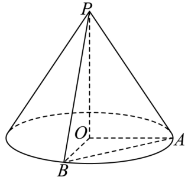
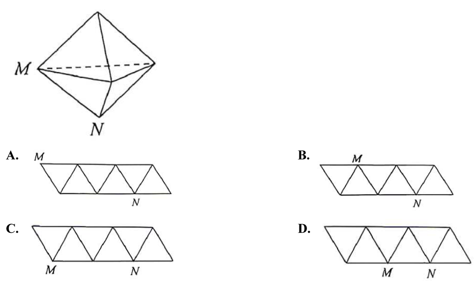
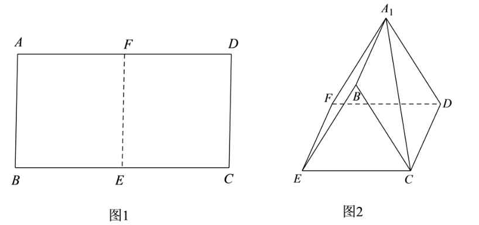
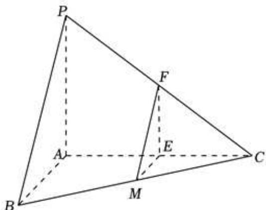
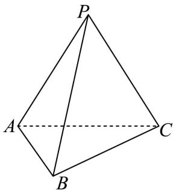
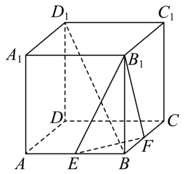
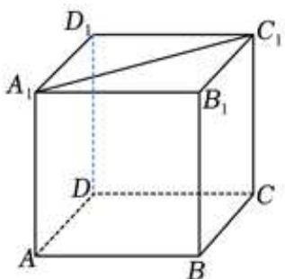
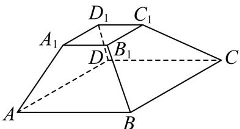
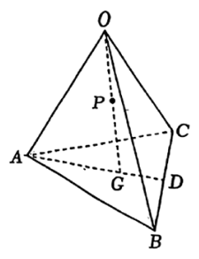
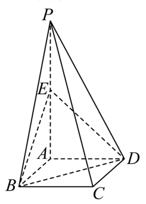

01 【来源：闵行26二模·18】
如图，圆柱 的轴截面 是边长为 的正方形， 为底面圆 的一条直径，且 。

（1）求异面直线 与 所成角的大小（用反三角表示）。
（2）求点 到平面 的距离。
作答区
FY27高数功底考 · 学生版 · 本专题 51 题
旧版 PDF 尚未同步近期校订，已暂停下载；请用打印／保存本专题 PDF 导出当前网页。学生版含作答区，不含答案解析。
没有匹配的题目，请更换关键词或清空搜索。
如图，圆柱 的轴截面 是边长为 的正方形， 为底面圆 的一条直径，且 。
（1）求异面直线 与 所成角的大小（用反三角表示）。
（2）求点 到平面 的距离。
已知圆柱和圆锥的底面半径相同，侧面积也相等，且它们的高均为 ，则圆锥的体积为______。
如图， 是圆锥顶点， 是底面圆心，点 在底面圆周上，，。

（1）若圆锥的侧面积为 ，求圆锥的体积。
（2）若直线 与平面 所成角为 ，求二面角 的平面角的正切值。
已知 是一个圆锥的顶点， 是母线，，该圆锥的底面半径是 1。 分别在圆锥的底面上，则异面直线 与 所成角的最小值为______。
如图， 为圆锥三条母线，。

（1）证明 ；
（2）若圆锥侧面积为 ， 为底面直径，，求二面角 的大小。
如图，在底面半径为 2，侧面积为 的圆锥 中， 为底面圆周上不同的三个点，。

（1）求直线 与平面 所成角的正弦值；
（2）设点 为线段 上的动点（不含端点 和 ），求证直线 与 不垂直。
已知圆锥的底面周长为 ，母线长为3，则该圆锥的侧面积为______。
已知一个圆锥的轴截面是边长为2的等边三角形，则这个圆锥的侧面积为（ ）。
A.
B.
C.
D.
已知圆锥的高为 8，底面半径为 6，则该圆锥的侧面积为______。
若一个棱长为2的正方体的八个顶点在同一个球面上，则该球的体积为______。
将下列平面图形沿等边三角形的边折起，不能折成如图所示几何体的是（ ）。

我国古代数学著作《九章算术》中将四个面都是直角三角形的空间四面体叫做“鳖臑”。如图是一个水平放置的 ，，，。现将 沿 折起，使点 移动到点 ，使得空间四面体 恰好是一个“鳖臑”，则二面角 的大小为（ ）。

A.
B.
C.
D.
已知长方形 中，，，点 分别为边 的中点（如图1）。若将长方形 沿着边 翻折，得到二面角 （如图2）。已知二面角 的大小为 。

（1）求证：平面 平面 。
（2）求直线 与平面 所成角的大小（结果用反三角表示）。
如图，等腰直角三角形 中，，点 是边 的中点，点 是边 上一点（不与 重合），将三角形 沿 逆时针翻折，点 的对应点是 ，连接 ，设 为二面角 大小，。在翻折过程中，下列说法当中不正确的是（ ）。

A. 存在点 和 ，使得
B. 存在点 和 ，使得
C. 存在点 和 ，使得
D. 存在点 和 ，使得
如图，等腰直角 的斜边 长为 ，将 绕斜边 所在直线旋转一周形成的旋转体的体积为______。

若某圆锥的底面半径为 ，高为 ，则该圆锥的侧面积为______。（结果保留 ）
已知一个直三棱柱的侧棱长为 2，底面面积为 2，则该三棱柱的体积为______。
在正四棱台 中，，，异面直线 与 所成角为 ，设二面角 的大小为 ，则 ______。
如图所示正四棱台 ，其中 ，。

（1）当 时，求 和平面 所成角；
（2）证明： 平面 ；若棱台高为 3，求三棱锥 的体积。
已知一个正四棱锥的每一条棱长都为 ，则该四棱锥的体积为______。
在四棱锥 中，四边形 是菱形，，，，点 为 的中点，点 为 上的点，，，平面 与棱 交于点 。
图 1：

图 2：

（1）求证：异面直线 与 垂直；
（2）当 时，求 与底面 所成的线面角大小。
如图为正四棱锥 ， 为底面 的中心。

（1）（5 分）若 ，，求 绕 旋转一周形成的几何体的体积；
（2）（9 分）若 ， 为 的中点，求直线 与平面 所成角的大小。
已知三棱锥 中， 平面 ，，，， 为 中点，过点 分别作平行于平面 的直线交 于点 。

（1）求直线 与平面 所成角的大小；
（2）求直线 到平面 的距离。
在三棱锥 中，平面 平面 ，，。

（1）若 是棱 的中点，证明： 平面 ，并求三棱锥 的体积；
（2）求二面角 的大小。
如图所示，正三棱锥 的侧面是边长为2的正三角形。

（1）求正三棱锥 的体积 ；
（2）设 分别是线段 的中点。
求证：① 平面 ；② 若平面 交 于点 ，则四边形 是正方形。
如图，在正方体 中，点 分别是棱 的中点。

（1）求证：。
（2）求二面角 的大小。
一个底面积为 的正四棱柱的所有顶点都在同一球面上，若该球的表面积为 ，则该正四棱柱的高为______。
将一个半径为 的球形石材加工成一个圆柱形摆件，则该圆柱形摆件侧面积的最大值为______。
已知球的表面积为 ，则该球的体积为______。
如图所示，在正方体 中，点 为边 上的动点，则下列直线中，始终与直线 异面的是（ ）。

A.
B.
C.
D.
在空间中，“两条直线平行”是“这两条直线没有公共点”的（ ）。
A. 充分非必要条件 B. 必要非充分条件
C. 充要条件 D. 既非充分也非必要
如图， 是正四棱台，则下列各组直线中属于异面直线的是（ ）。

A. 和 ；
B. 和 ；
C. 和 ；
D. 和 。
空间中有两个不同的平面 和两条不同的直线 ，则下列说法中正确的是（ ）。
A. 若 ，，，则 ；
B. 若 ，，，则 ；
C. 若 ，，，则 ；
D. 若 ，，，则 。
定义一个集合 ，集合中的元素是空间内的点集，任取 ，存在不全为 0 的实数 ，使得 。已知 ，则 的充分条件是（ ）。
A.
B.
C.
D.
已知 为空间中三组单位向量，且 ，， 与 夹角为 。点 为空间任意一点，且 ，满足 ，则 最大值为______。
已知四棱柱 ，底面 为平行四边形，，，且 ，则异面直线 与 的夹角余弦值为______。

已知边长为 的正四面体 的内切球（球面与四面体四个面都相切的球）的球心为 ，若空间中的动点 满足 ，，则点 的轨迹所形成的几何体的体积为（ ）。
A.
B.
C.
D.
如图，已知正三角形 和正方形 的边长均为 ，且二面角 的大小为 ，则 ______。

已知向量 ，，若 ，则实数 ______。
如图，在四面体 中， 为 的中点，，且 为 的中点。设 ，，，用 表示 ，则 ______。

在四棱锥 中，，，，则该四棱锥的高为（ ）。
A.
B.
C.
D.
若正三棱锥 的底面边长为6，高为 ，动点 满足
则 的最小值为______。
如图，四棱锥 的底面是边长为 的正方形，侧棱 底面 ，且 ， 是侧棱 的中点。

（1）求证： 平面 。
（2）求证：平面 平面 。
已知点 在正方体 的表面上， 到三个平面 、、 中的两个平面的距离相等，且 到剩下一个平面的距离与 到此正方体的中心的距离相等，则满足条件的点 的个数为______。

如图，已知 是 的直径，点 是 上异于 的一点。设过点 的直线 垂直于 所在的平面，且 。

（1）若 为 中点， 为线段 的中点， 为线段 上一点，且 平面 。求证： 为线段 中点，并求三棱锥 的体积。
（2）记二面角 的平面角为 ，求 的最小值，并指出其取得最小值时点 的位置。
如图，已知在四棱柱 中， 平面 ，、 分别是 、 的中点。

（1）求证： 平面 ；
（2）若底面 为梯形，，，，异面直线 与 所成角为 。求直线 与平面 所成角的正弦值。
如图，在四棱锥 中，底面 是边长为2的正方形，且 ，，，点 分别为 的中点。

（1）求证： 平面 ；
（2）求点 到平面 的距离。
如图，在四棱锥 中，底面 是边长为 的正方形，侧面 底面 ，且 ，设 分别为 的中点。

（1）证明：直线 平面 ；
（2）求直线 与平面 所成的角的正切值。
如图，该几何体由一个棱长为 的正方体 与一个半圆柱拼接而成，圆心 分别为线段 的中点，动点 在弧 上滑动。

（1）若点 为弧 的中点，求直线 与平面 所成角的大小。
（2）若弧 的长度为 ，求证：平面 平面 。
如图，平面 平面 ，四边形 是正方形，，，，。

（1）证明： 平面 ；
（2）求二面角 的正切值。
如图，在直三棱柱 中，，，，点 是棱 的中点。

（1）求证：平面 平面 ；
（2）求点 到平面 的距离以及三棱锥 的体积。